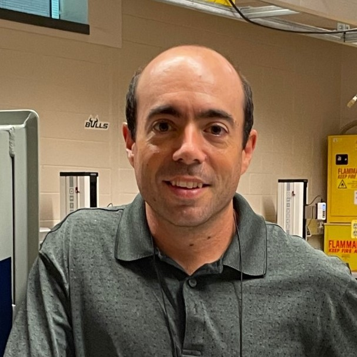

Dr. Akintewe specializes in increasing female retention in STEM. She holds a Doctorate in Chemical Engineering from USF, a Masters in Materials Science and Engineering from the Ohio State University, and a Bachelor's in Chemical Engineering from the City College of New York. Dr. Akintewe's research focuses on identifying factors affecting female attrition rates and developing assessment tools for first-year and first-generation female students in engineering. She aims to establish a mentoring program to support academic progression and inclusivity. Dr. Akintewe has been recognized for her teaching and advocacy efforts.

Miguel Goni Rodrigo, Ph.D.
Department of Mechanical Engineering
Assistant Professor of Instruction
Research Area: Nanoscale Heat Transfer and Solid Mechanics
Dr. Jeong's research interests lie in the area of control systems with specialty in designing resilient, robust, optimal, and adaptive observers and controllers for linear, nonlinear, stochastic, and chaotic systems.
Currently engaged in research related to macro-molecular and nano-materials deposition in a vacuum using electrospray. They utilize this technology to create thin films of bio-materials, polymers, and nano-crystals, investigating their electronic structure through photoemission spectroscopy. The electrospray system they work with is available commercially through Elion Systems (www.elionsystems.com), which specializes in custom-designed in-vacuum deposition systems for various vacuum environments. Their research interests also encompass atomic layer deposition, nanomaterials synthesis, supramolecular materials, and functional bio-film coatings.
Research Areas: Water resources, Hydraulic & water quality modeling, GIS in Hydrology, Development of lake & estuary water quality management models & estuary sediment dynamics

 Rudy Schlaf, Ph.D.
Rudy Schlaf, Ph.D.